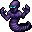

影の怪物 Shadow Creatures
英語版 CrawlWiki の記事「Shadow Creatures」(0.28 向け、2026-06-17 版)の翻訳です。原文の著者は編集履歴をご覧ください。
この記事は 0.28 の時点の内容で、最新の 0.34 とは違うところがあるかもしれません。
| 術者が今いる場所に生息するモンスターの複製を、影とアビスの物質の糸から紡ぎ出す。 |
影の怪物は召喚術の呪文で、結果は使う場所によって変わる。1d(1 + HD/5) 体のモンスター(または群れ)を、今いる場所にふさわしい顔ぶれから呼び出す。呼び出したものが留まる時間はヒットダイスに反比例するので、弱いものほど長く残る。ふだん装備品を持って生まれるモンスターには、召喚された武器と防具が与えられ、本体といっしょに消える。
群れで呼び出されたもの(オークの一団など)は、召喚数の上限 4 に対して 1 体と数える。
影の怪物を唱える敵は次のとおり。
- g
 ボガート
ボガート - G
 輝くオレンジ色の脳髄
輝くオレンジ色の脳髄 - L
 ハラジッドの魔法使い
ハラジッドの魔法使い - I
 橙水晶の像
橙水晶の像 - 2

シャドウデーモン - I
 奇妙な機械
奇妙な機械

変更履歴
| 術者が今いる場所に生息するモンスターの複製を、影とアビスの物質の糸から紡ぎ出す。この呪文で呼び出したものは、同時に 4 体までしか維持できない。 |